早在三、四年前，就有和小哲和小輝同學討論一起參加鐵人三項，不過當時的討論都是半開玩笑性質的，畢竟游泳1500公尺，自行車40公里，跑步10公里，連其中一項都無法完成了，還要在數小時內輪流搞定上述三項運動，這實在不是步入中年的我們應該碰的運動，還是大家嘴巴說說就好了。但在前年和小超、施董各敗家買了一台登山車後，開始接觸自行車運動，發覺要騎40公里似乎不會太困難（我是指平地部分），心中冒險因子升起，開始想試一下自己極限何在，毅然報名參加了去年的統一盃日月潭小鐵人比賽（上述3項運動公里數各減半），當時號召好多人，除了施董有意跟進外，沒有其他人有參加的意願（其中包括現在要出國比賽的阿山哥也是怕的要死），但為了心中那股熊熊的熱火，還是打死不退，參加到底，到真正比賽當天，雖然累給半死，還是在期限內完成三項運動，猶記得完賽當時，雖然雙腿因為瀕於抽筋邊緣，而酸痛不已，但心中依舊感動昇起，看來我還可以稱的上是一條活龍。經歷過小鐵人比賽後，本想說人生有個紀念就算了，沒想的今年阿山哥突然體能大開竅，騎自行車南征北討，無役不與，又慫恿我再去日月潭參加鐵人三項比賽，與去年不同的是，這次是參加正式51.5公里的比賽，心中還在畏懼兼猶豫之際，同庭的施董竟也邀約同行，頓時心一橫就同意一起參加比賽。不過願意參加比賽，和有無能力參加比賽到是兩回事，為了能順利完賽（不求佳績，只求完賽就好），開始擬定訓練計畫，首先開始嚴格節食計畫，每天中午都只吃水果，並且嚴禁吃宵夜，如此大概瘦了3到4公斤，又每星期二、四騎完腳踏車後，再到中山大學操場跑步2至5公里。此外，工欲善其事，並先利其器，在上簽徵詢家中女王同意後，斥資購入了1台美麗達路德905的公路車，同時為了在增加一絲絲的時間，又買了一件ORCA的鐵人衣、專用的鐵人包、號碼帶、晶片帶及三用水壺，為了怕鐵腿，又買了一大堆營養食品（以上種種都顯示能力不足，只好求諸外援，而且不論實力如何，重點是行頭擺出來要嚇人）。正式比賽時間是7月6日 ，我們在7月5日 就先進駐日月潭，想說先去游泳場地溜達一下，到了現場，光是看到水面浮標向外拉開好遠好遠，心中頓時一沈，我真的有能力游完全程嗎？再去看了一下自行車路線，地形也是上下起伏，峰峰相連，看來明天真的有一場硬仗要打。後來在會場中，遇到專科好友苦瓜、耀賢也一起參加比賽，將近快10年不見的好友聚在一起敘敘舊，那種溫暖的感覺也驅走了心中的不安，不管那麼多了，兵來將擋，水來土淹，豁出去就對了，心中自己如此告訴自己。到了第二日正式開始比賽，游泳、自行車都還稱順利，到了死穴跑步時，縱使已吃了一大堆保養品，也噴了很多的肌樂，大腿的肌肉還是開始不聽話，又要鐵腿了，我真的是鐵腿王子，每次比賽必鐵腿，強忍著雙腿的不適，跑跑走走的硬撐完10公里回到終點線，終於完賽了，雖然成績不盡理想，但也達到自己要求完賽的目標。其實鐵人三項也沒想像的那麼恐怖，只要在比賽前有一定的練習、準備，應該都可以達到完賽的目標（參加過講話就大聲起來了），現在目標放在11月底，愛河的鐵人三項比賽，有好友看到本文後，可以考慮一起來參加喔。
這就是我為了完賽購入的路德905公路車
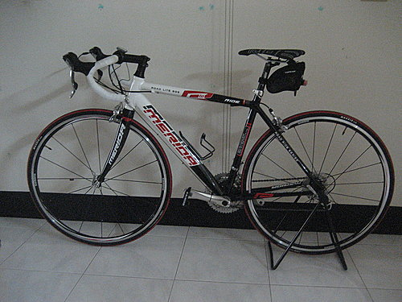
為了這次比賽而買的orca鐵人衣，阿山哥說這件衣服是專門設計給跑226公里鐵人們專用的，而且我買的價錢異常超值，但我在意的是：我完賽的成績可能配不上這件專業級的衣服。
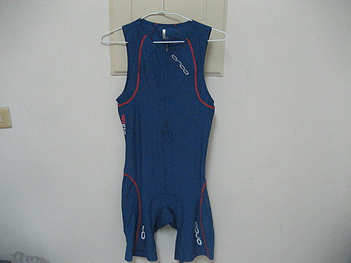
專用鐵人袋，大家一定不知道這怎麼用吧
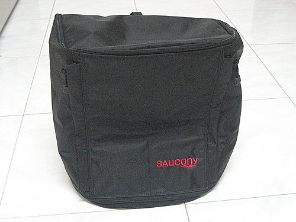
答案揭曉，鐵人袋展開來是這個模樣，可以依序把車帽、車鞋、布鞋、太陽眼鏡、補給品等雜七雜八的東西都放進這個袋子，比賽當天不用大包小包的，只要帶這一個到轉換區就好了。
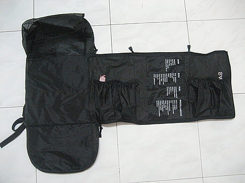
三段水壺，第一段吸水，第二段吸POWER BAR補給品，第三段水和POWER BAR一起吸，蠻有巧思的東西。
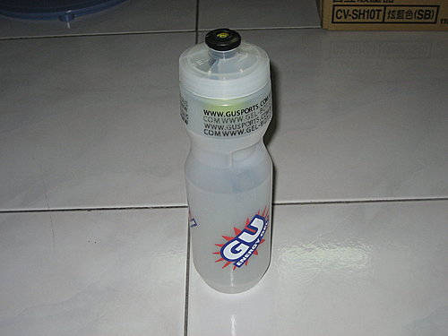
專門用來夾號碼布的帶子，為了省一些時間，鐵人們真是無所不用其極。

為了怕比賽中鐵腿而買的一大堆補給品，感覺就是有吃有保佑的意思。
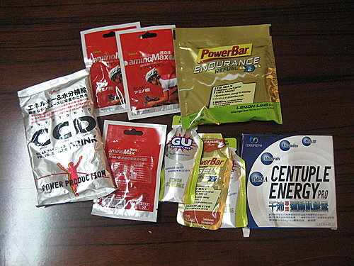
比賽開始囉，一大堆人在日月潭中誓師
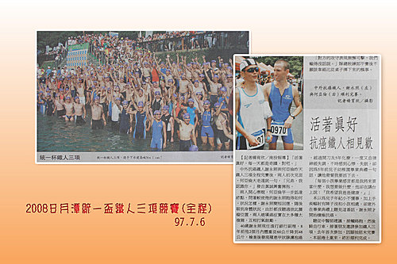
賽前暖身時間，先和施董、簡校長一起合照
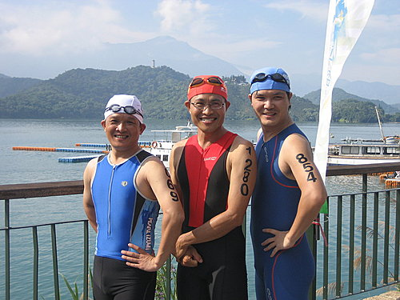
妹妹已經是第二年到日月潭幫爸爸加油了。
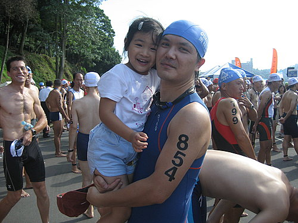
全家福合照一張，妹妹似乎還沒睡醒的樣子。
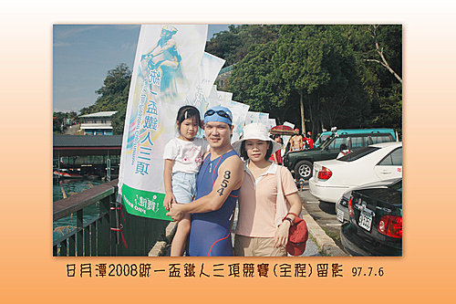
游完1500公尺，上岸後還笑得出來，一個月來的特訓看來是有效的
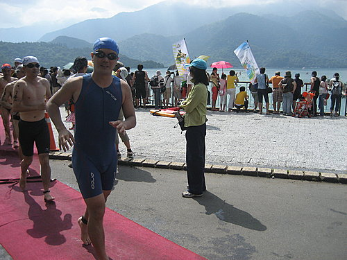
看到沒有，三張小圖中間那一張就是我騎車比賽的英姿，超殺。
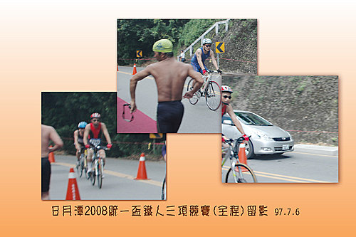
比賽完畢後，到日月潭遊玩的紀念照
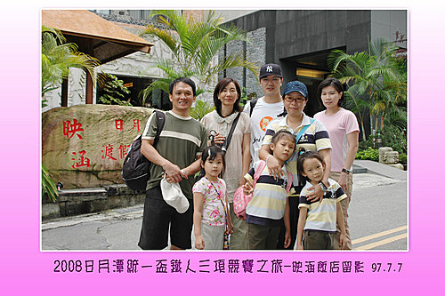